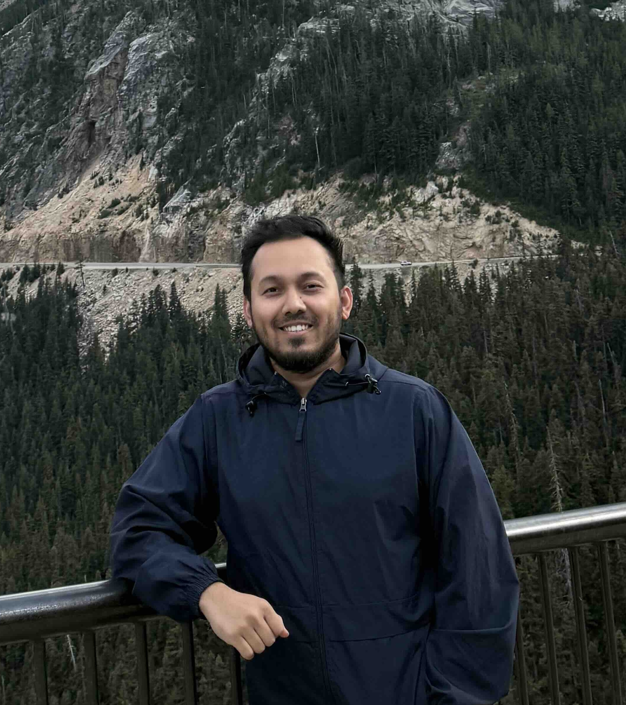

Machine learning and systems researcher / PhD student, Virginia Tech
I'm a PhD student in Machine Learning and Systems at Virginia Tech SNAIL Lab, advised by Dr. Bo Ji.
My research centers around optimizing machine learning workloads for systems, exploring techniques like efficient self-attention, token dropping, quantization, and many more to make AI more accessible for edge and commodity devices. Prior to starting my PhD, I worked as an ML Engineer at IQVIA where I worked on building and deploying their AI-driven recommendation systems for pharmaceutical companies. Beyond research, I actively contribute to the academic community. I served as Secretary for the Virginia Tech CS Graduate Council in 2024–25. Additionally, I served as a reviewer for workshops at ICLR, CVPR and volunteered at AAAI.
Peer-reviewed
Equitable Skin Disease Prediction Using Transfer Learning and Domain Adaptation
Local and Global Feature Based Hybrid Deep Learning Model for Bangla Parts of Speech Tagging
Preprints
Intent-Aware Caching for Efficient LLM Serving
GazeVLM: Gaze-Guided Vision-Language Models for Efficient and Robust Inference
Undergraduate thesis
Generate 3D Bone from DICOM using Deep CNN